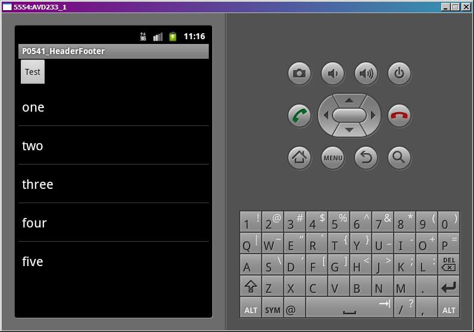
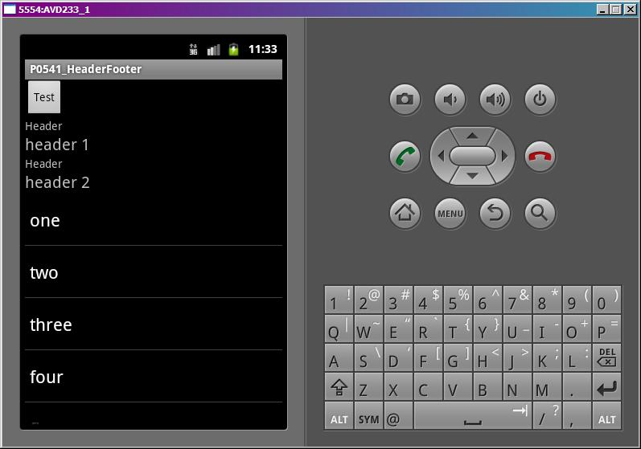

В этом уроке:
- используем Header и Footer в списках
- разбираемся, как и где используется HeaderViewListAdapter
Header и Footer (далее по тексту HF) – это View, которые могут быть добавлены к списку сверху и снизу. За создание соответствующих View для пунктов списка отвечает уже не адаптер, а программист. Он должен сам создать View и предоставить его списку в методы addHeader или addFooter.
У этих методов есть две реализации. Рассмотрим на примере Header.
1) addHeaderView (View v, Object data, boolean isSelectable)
v – View, которое отобразится, как пункт списка
data – объект, связанный с этим пунктом списка
isSelectable – можно ли будет кликать на пункт или выделять его
Тут просто идет вызов первого метода с параметрами: addHeaderView(v, null, true);
При использовании HF и адаптера есть нюанс. При присвоении списку адаптера (метод setAdapter), список проверяет, были ли уже добавлены Header или Footer.
Если нет, то список использует данный ему адаптер и запрещает в дальнейшем добавлять себе HF. Это же написано в документацие методов addHeader и addFooter – «Call this before calling setAdapter». Т.е. вы должны добавить HF до того, как присвоите адаптер списку.
Если да, то список оборачивает полученный адаптер в HeaderViewListAdapter, используя конструктор: HeaderViewListAdapter (ArrayList<ListView.FixedViewInfo> headerViewInfos, ArrayList<ListView.FixedViewInfo> footerViewInfos, ListAdapter adapter), где headerViewInfos и footerViewInfos – это ранее добавленные к списку HF, а adapter – тот адаптер, который мы даем списку. И теперь при работе списка будут использоваться методы адаптера HeaderViewListAdapter, т.е. будут использоваться как HF, так и данные из адаптера, который присвоили списку.
Посмотрим на практике.
Создадим проект:
Project name: P0551_HeaderFooter
Build Target: Android 4.0
Application name: HeaderFooter
Package name: ru.startandroid.develop.p0551headerfooter
Create Activity: MainActivity
В файл strings.xml добавим строки:
<string name="header_title">Header</string>
<string name="footer_title">Footer</string>
<string name="button_text">Test</string>Экран main.xml:
<?xml version="1.0" encoding="utf-8"?>
<LinearLayout
xmlns:android="http://schemas.android.com/apk/res/android"
android:layout_width="fill_parent"
android:layout_height="fill_parent"
android:orientation="vertical">
<Button
android:id="@+id/button1"
android:layout_width="wrap_content"
android:layout_height="wrap_content"
android:onClick="onclick"
android:text="@string/button_text">
</Button>
<ListView
android:id="@+id/lvMain"
android:layout_width="match_parent"
android:layout_height="wrap_content">
</ListView>
</LinearLayout>Кнопка и список.
Создадим Layout-файлы для Header и Footer.
header.xml
<?xml version="1.0" encoding="utf-8"?>
<LinearLayout
xmlns:android="http://schemas.android.com/apk/res/android"
android:layout_width="match_parent"
android:layout_height="match_parent"
android:orientation="vertical">
<TextView
android:id="@+id/tvTitle"
android:layout_width="wrap_content"
android:layout_height="wrap_content"
android:text="@string/header_title">
</TextView>
<TextView
android:id="@+id/tvText"
android:layout_width="wrap_content"
android:layout_height="wrap_content"
android:text=""
android:textSize="20sp">
</TextView>
</LinearLayout>footer.xml
<?xml version="1.0" encoding="utf-8"?>
<LinearLayout
xmlns:android="http://schemas.android.com/apk/res/android"
android:layout_width="match_parent"
android:layout_height="match_parent"
android:orientation="vertical">
<TextView
android:id="@+id/tvTitle"
android:layout_width="wrap_content"
android:layout_height="wrap_content"
android:text="@string/footer_title">
</TextView>
<TextView
android:id="@+id/tvText"
android:layout_width="wrap_content"
android:layout_height="wrap_content"
android:text=""
android:textSize="20sp">
</TextView>
</LinearLayout>Код MainActivity.java:
package ru.startandroid.develop.p0551headerfooter;
import android.app.Activity;
import android.os.Bundle;
import android.util.Log;
import android.view.View;
import android.widget.ArrayAdapter;
import android.widget.ListView;
import android.widget.TextView;
public class MainActivity extends Activity {
final String LOG_TAG = "myLogs";
String[] data = {"one", "two", "three", "four", "five"};
ListView lvMain;
ArrayAdapter<String> adapter;
View header1;
View header2;
View footer1;
View footer2;
/** Called when the activity is first created. */
@Override
public void onCreate(Bundle savedInstanceState) {
super.onCreate(savedInstanceState);
setContentView(R.layout.main);
lvMain = (ListView) findViewById(R.id.lvMain);
adapter = new ArrayAdapter<String>(this, android.R.layout.simple_list_item_1, data);
// создаем Header и Footer
header1 = createHeader("header 1");
header2 = createHeader("header 2");
footer1 = createFooter("footer 1");
footer2 = createFooter("footer 2");
fillList();
}
// формирование списка
void fillList() {
}
// нажатие кнопки
public void onclick(View v) {
}
// создание Header
View createHeader(String text) {
View v = getLayoutInflater().inflate(R.layout.header, null);
((TextView)v.findViewById(R.id.tvText)).setText(text);
return v;
}
// создание Footer
View createFooter(String text) {
View v = getLayoutInflater().inflate(R.layout.footer, null);
((TextView)v.findViewById(R.id.tvText)).setText(text);
return v;
}
}В onCreate подготавливаем адаптер и HF-элементы.
В fillList будем заполнять список.
onclick – обработка нажатия кнопки
createHeader и createFooter – создание View для HF и заполнение их данными.
Попробуем проверить, что Header реально нельзя добавить после установки адаптера. Реализуем метод fillList так:
// формирование списка
void fillList() {
try {
lvMain.setAdapter(adapter);
lvMain.addHeaderView(header1);
} catch (Exception ex) {
Log.e(LOG_TAG, ex.getMessage());
}
}Сохраним и запустим.

Пункты списка есть. Header-а нет.
Смотрим лог, видим там ошибку: «Cannot add header view to list -- setAdapter has already been called». По русски: нельзя добавить Header, адаптер уже установлен.
Давайте сначала добавим HF, а потом присвоим адаптер. Поменяем код fillList:
// формирование списка
void fillList() {
lvMain.addHeaderView(header1);
lvMain.addHeaderView(header2, "some text for header 2", false);
lvMain.addFooterView(footer1);
lvMain.addFooterView(footer2, "some text for footer 2", false);
lvMain.setAdapter(adapter);
}Обратите внимание на то, с какими параметрами добавляем header2 и footer2. Мы связываем с ними String объекты и с помощью false указываем, что выделение на этих пунктах не будет работать.
Все сохраним, запустим приложение.

HF появились. Убедитесь, что клик на header2 и footer2 ни к чему не приводит. И если покрутить колесо мыши, то выделение на этих пунктах не останавливается.
Кстати, если вы делаете свой адаптер, то этого эффекта можно добиться, выполнив свою реализацию метода isEnabled.
Попробуем удалить HF. Метод onclick перепишем так:
// нажатие кнопки
public void onclick(View v) {
lvMain.removeHeaderView(header2);
lvMain.removeFooterView(footer2);
}Запустим, нажмем кнопку Test и видим, что исчезли те HF, которые мы удалили - header2 и footer2.
Теперь посмотрим, как работает HeaderViewListAdapter, разберемся, что там за вложенный адаптер у него и как до него добраться.
Перепишем метод onclick:
// нажатие кнопки
public void onclick(View v) {
Object obj;
HeaderViewListAdapter hvlAdapter = (HeaderViewListAdapter) lvMain.getAdapter();
obj = hvlAdapter.getItem(1);
Log.d(LOG_TAG, "hvlAdapter.getItem(1) = " + obj.toString());
obj = hvlAdapter.getItem(4);
Log.d(LOG_TAG, "hvlAdapter.getItem(4) = " + obj.toString());
ArrayAdapter<String> alAdapter = (ArrayAdapter<String>) hvlAdapter.getWrappedAdapter();
obj = alAdapter.getItem(1);
Log.d(LOG_TAG, "alAdapter.getItem(1) = " + obj.toString());
obj = alAdapter.getItem(4);
Log.d(LOG_TAG, "alAdapter.getItem(4) = " + obj.toString());
}Сначала мы с помощью метода getAdapter получаем адаптер, который использует ListView. Т.к. мы добавляли HF к списку, то он использует адаптер HeaderViewListAdapter. Попробуем получить данные по второму и пятому пункту этого адаптера, вызвав getItem и выведем значение в лог.
Далее мы от HeaderViewListAdapter получаем его вложенный адаптер. Это тот адаптер, который мы давали на вход списку в методе setAdapter. Но т.к. были использованы HF, то список создал HeaderViewListAdapter в качестве основного адаптера и отдал ему наш в качестве вложенного и теперь мы его получаем методом getWrappedAdapter. Попробуем от нашего адаптера получить данные также по второму и пятому пункту и вывести в лог.
Тут важно понимать, что если бы мы не добавляли HF к списку, то список не стал бы заморачиваться с созданием HeaderViewListAdapter и метод lvMain.getAdapter сразу вернул бы ArrayAdapter.
Сохраняем, запускаем, жмем кнопку Test и смотрим лог.
hvlAdapter.getItem(1) = some text for header 2
hvlAdapter.getItem(4) = three
alAdapter.getItem(1) = two
alAdapter.getItem(4) = five
Адаптеры показали разные данные. Это произошло потому, что hvlAdapter объединяет HF с данными из alAdapter и работает с ними, как с одним набором данных. А alAdapter учитывает только свои данные, которые мы ему давали (массив строк data[]).
Для hvlAdapter второй пункт – это header2. При добавлении Header-а мы присвоили ему объект String, его он сейчас и вывел в лог. Пятый пункт – three.
Для alAdapter второй пункт – two, а пятый - five. Он вообще не в курсе ни про какие HF, он работает только со своими данными.
Вот как-то так организована работа с Header и Footer элементами. А про HeaderViewListAdapter в документацие написано, что разрабам скорее всего не придется использовать этот класс напрямую в своем коде. Наверно так оно и есть. Этот класс используется списком, чтобы работать с данными адаптера и добавленными Header и Footer, как с одним набором данных.
Для тех, кто расстроился, что нельзя добавлять HF после присвоения адаптера списку, внесу сразу важную поправку. В документацие действительно так написано. Но на деле это относится только к Header. А Footer добавляется без проблем. И я не знаю, баг это или фича )